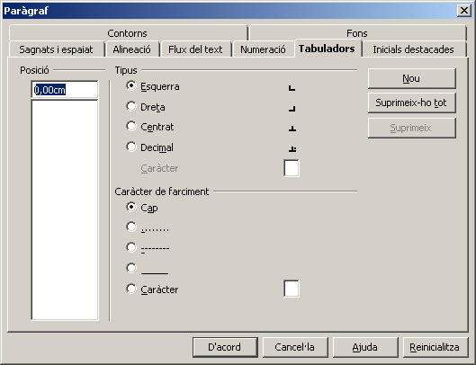
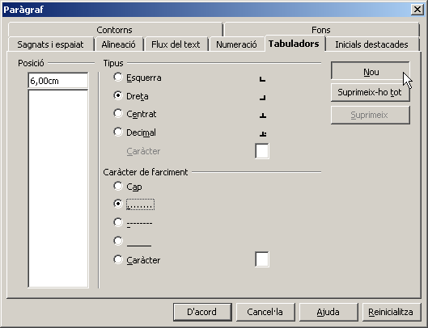

Tabulacions
Una forma de presentació d'informació en columnes alternativa a les taules són les tabulacions.
Una tabulació és un caràcter ”especial” que s'insereix prement la tecla tab:

Creeu un nou document de text amb LibreOffice Writer. Tot seguit seleccioneu i enganxeu-hi el text següent (caldrà, això sí, inserir-lo mitjançant Edita | Enganxament especial | Text no formatat):
Població segons nivell d'instrucció. Recomptes. Població de 10 anys i més. Catalunya. Distribució per comarques. Any 2001. (Font: Idescat. Banc d'estadístiques de municipis i comarques [www.idescat.net]). No sap llegir o escriure % Total Alt Camp 812 2,53 32082 Alt Empordà 1998 2,24 89349 Alt Penedès 2428 3,34 72609 Alt Urgell 236 1,36 17381 Alta Ribagorça 56 1,75 3202 Anoia 1922 2,29 83893 Bages 3150 2,24 140359 Baix Camp 2958 2,28 129538 Baix Ebre 1417 2,35 60295 Baix Empordà 2275 2,46 92617 Baix Llobregat 17617 2,85 618834 Baix Penedès 1242 2,26 55026 Barcelonès 37546 1,96 1916434 Berguedà 566 1,63 34808 Cerdanya 175 1,36 12836 Conca de Barberà 217 1,28 16933 Garraf 1972 2,04 96571 Garrigues 196 1,12 17575 Garrotxa 906 2,09 43348 Gironès 2802 2,3 121871 Maresme 8158 2,57 317722 Montsià 1297 2,48 52386 Noguera 539 1,71 31606 Osona 2619 2,27 115579 Pallars Jussà 126 1,14 11026 Pallars Sobirà 47 0,83 5674 Pla d'Urgell 463 1,72 26946 Pla de l'Estany 572 2,62 21805 Priorat 106 1,24 8540 Ribera d'Ebre 352 1,77 19870 Ripollès 512 2,16 23723 Segarra 258 1,56 16591 Segrià 3086 2,06 149821 Selva 2547 2,42 105363 Solsonès 213 2,07 10284 Tarragonès 3925 2,4 163577 Terra Alta 189 1,66 11368 Urgell 356 1,27 28049 Val d'Aran 54 0,78 6890 Vallès Oc. 17115 2,61 656106 Vallès Oriental 6965 2,44 285933 Catalunya 129990 2,27 5724420
A partir d'aquest moment, teniu dues formes de “tabular” el text inserit: ”a ull” o de forma exacta.
Formatat de la tabulació mitjançant el regle
Aquesta és una forma “fàcil” però menys precisa de formatar una pàgina que contingui tabulacions.
En primer lloc, caldrà seleccionar (mitjançant el selector que hi ha a la zona on es troben el regle vertical i l'horitzontal) el tipus de tabulació que es vol col·locar. N'hi ha quatre de possibles:
-
Tabulació “esquerra” (el text o els nombres que hi hagi després de la tabulació, apareixeran arrenglerats per l'esquerra).
-
 Tabulació “dreta” (el text o els nombres que hi hagi després de la tabulació, apareixeran arrenglerats per la dreta).
Tabulació “dreta” (el text o els nombres que hi hagi després de la tabulació, apareixeran arrenglerats per la dreta).
-
Tabulació “decimal” (els nombres apareixeran arrenglerats a la dreta per la seva coma, independentment de les xifres decimals que tinguin).
-
Tabulació “centrada” (el text o els nombres que hi hagi després de la tabulació, apareixeran arrenglerats per la seva posició centrada).
Per començar, seleccioneu tot el text que heu copiat menys el títol (els dos primers paràgrafs).
Ara podeu posar (clicant el regle horitzontal) una tabulació “dreta” a la posició 6, una tabulació “decimal” a la posició 10 i una altra de “dreta” a la posició 14.

Observeu com ha quedat d'arrenglerat en columnes el text que heu copiat.
Si voleu “moure” una tabulació una vegada està posada, només cal que la “punxeu” amb el ratolí i l'arrossegueu a l'esquerra o a la dreta.
Si voleu eliminar una tabulació posada per error, només cal que la “punxeu” amb el ratolí i l'arrossegueu cap amunt, fora del regle.
Formatat de la tabulació mitjançant les propietats del paràgraf
Torneu a crear un document nou i torneu a copiar-hi el mateix contingut que abans.
Seleccioneu tot el text que heu copiat menys el títol (els dos primers paràgrafs).
Crideu el quadre de propietats de paràgraf (Format | Paràgraf…) i aneu a la “pestanya” Tabuladors.

Escriviu / seleccioneu:
-
6 a la posició (en sortir de la casella, apareixerà escrit 6,00cm, tot depenent de la configuració del sistema operatiu de treball).
-
Dreta a Tipus de tabulació.
-
……… a caràcter de farciment (això farà que apareguin punts als espais en blanc que deixen les tabulacions, tot facilitant-ne la legibilitat).
Ja podeu clicar el botó Nou.

Repetiu el procés amb …
-
10, Decimal (caràcter “,”) i ………
-
14, Dreta i ………
Observeu les diferències amb l'anterior operativa i valoreu la possibilitat de fixar exactament el punt on es vol fer aparèixer la tabulació.
Deseu el document amb el nom "Poblacions.odt"
Format de columnes periodístiques
Formatar una pàgina en columnes és un dels recursos més emprats en el món de l'edició en paper.
LibreOffice Writer presenta, al menú Format, totes les eines necessàries per tal d'aconseguir aquesta presentació.
Recupereu el document victorcatala-lamarebalena_fragment_.odt corresponent a un fragment del conte “La mare balena” de Víctor Català i que ha estat posat a disposició dels internautes pel Projecte Gutenberg a l'adreça http://www.gutenberg.org/etext/14816.
Seleccioneu tot el document (a excepció del títol) i crideu Format|Columnes….
Al quadre de diàleg que apareix, podeu determinar dues columnes i un espaiat entre columnes de mig centímetre (ja que, si no és així, el text apareixerà massa “enganxat” i en dificultarà la lectura):

Si voleu, proveu de modificar el format del títol i de repetir el procés, però afegint una línia de separació entre les columnes o un emmarcat de les mateixes.

|
|

|
|